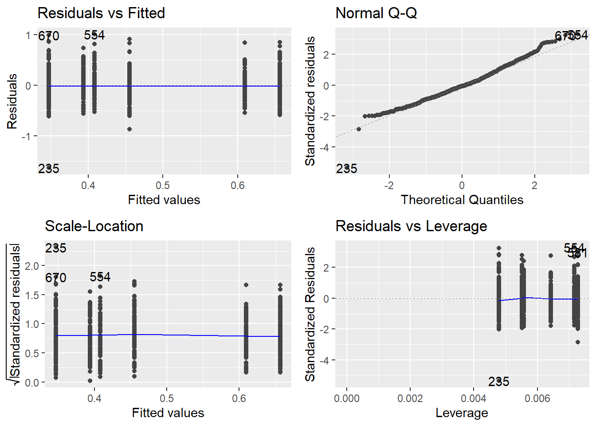
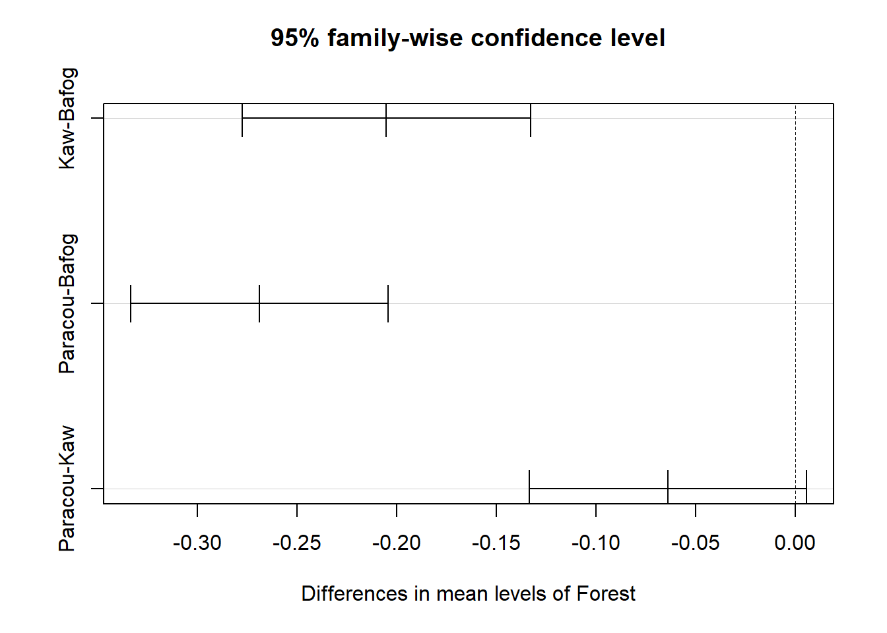
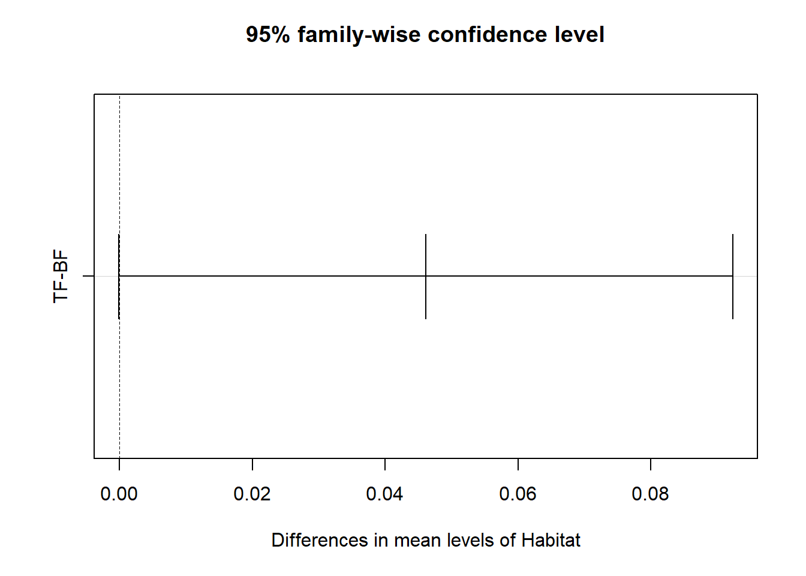
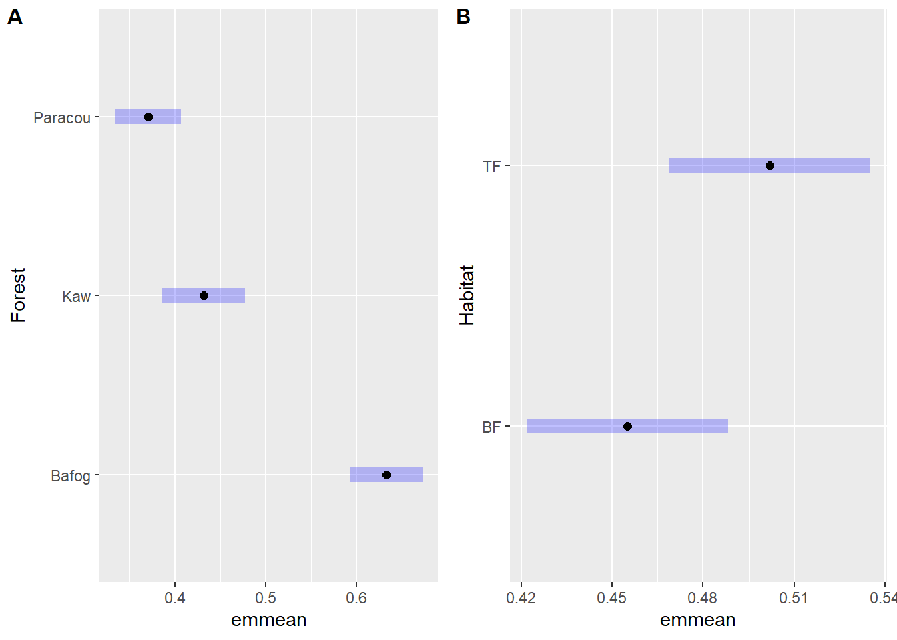
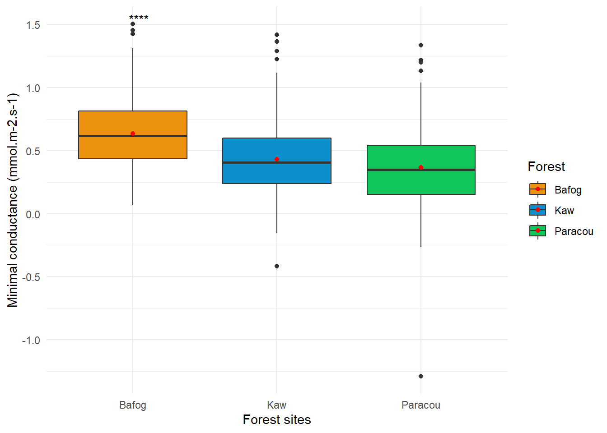
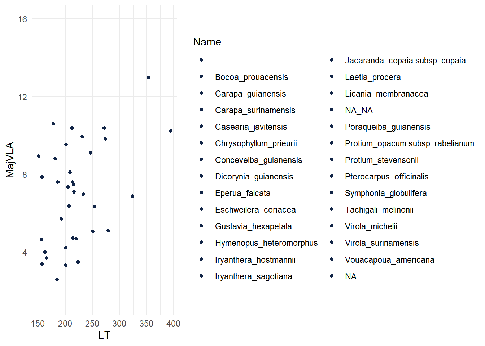
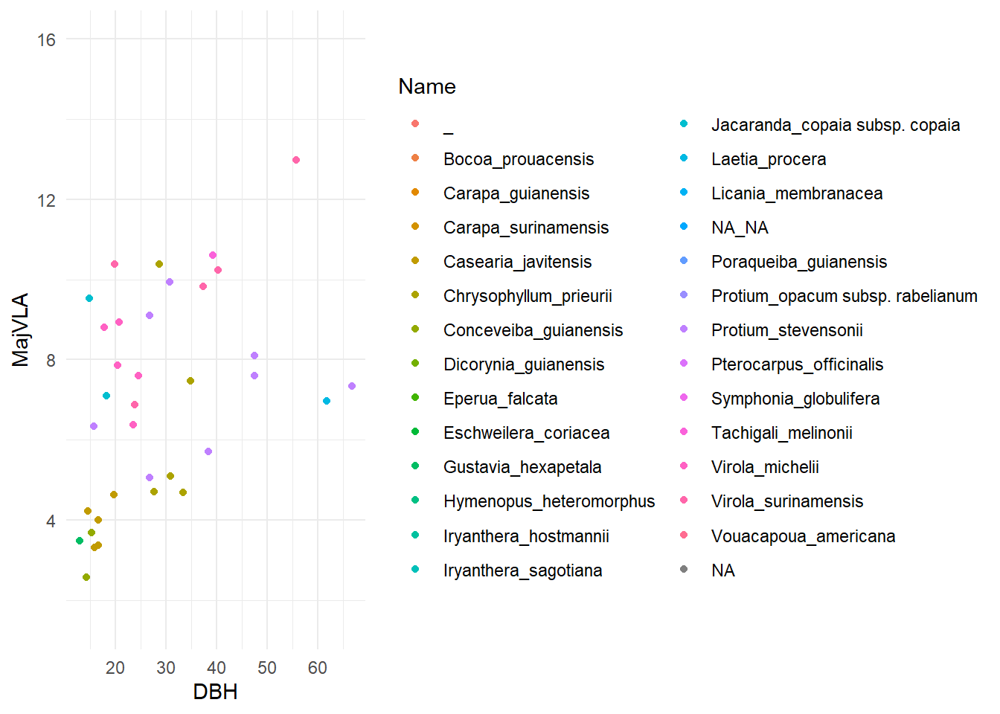
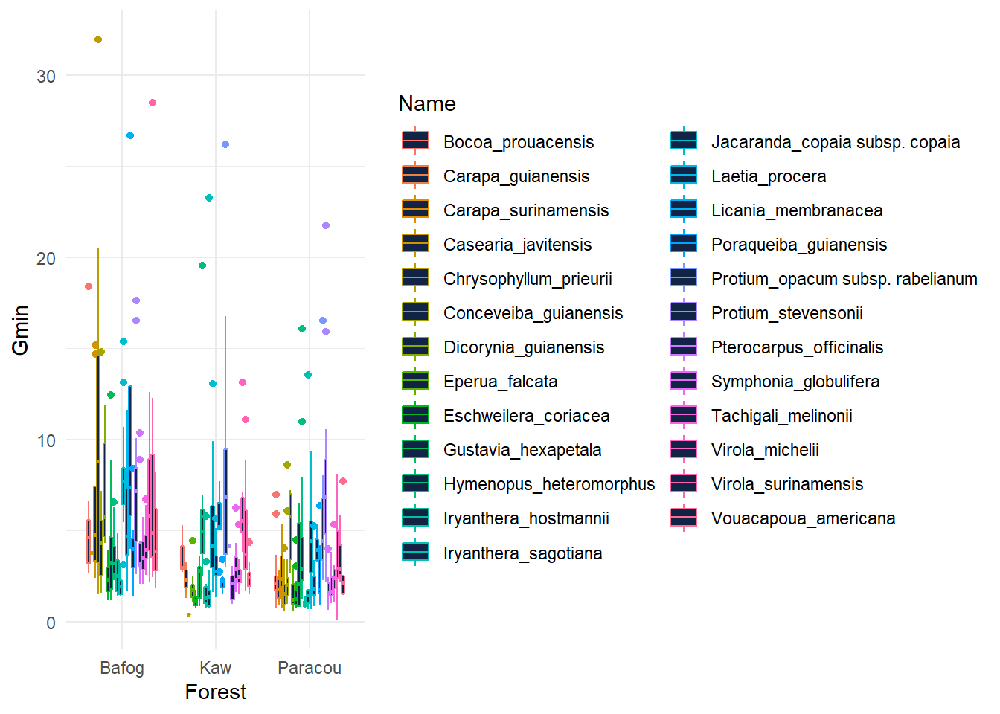

Chapter 10 Gmin - exploration
library(tidyr)
library(dplyr)
Metradica %>% group_by(Forest) %>% summarise_at(vars(Gmin), funs(mean(Gmin, na.rm=TRUE))) ## # A tibble: 3 x 2
## Forest Gmin
## <chr> <dbl>
## 1 Bafog 5.47
## 2 Kaw 3.60
## 3 Paracou 3.08# Global test
library(ggpubr)
library(ggfortify)
Metradica$Forest <- as.factor(Metradica$Forest)
Metradica$Habitat <- as.factor(Metradica$Habitat)
Model_gmin<-lm(log10(Gmin) ~ Forest + Habitat, data = Metradica)
autoplot(Model_gmin)
##
## Call:
## lm(formula = log10(Gmin) ~ Forest + Habitat, data = Metradica)
##
## Residuals:
## Min 1Q Median 3Q Max
## -1.63849 -0.21047 -0.01908 0.18124 1.00943
##
## Coefficients:
## Estimate Std. Error t value Pr(>|t|)
## (Intercept) 0.60964 0.02449 24.889 < 2e-16 ***
## ForestKaw -0.20127 0.03086 -6.522 1.36e-10 ***
## ForestParacou -0.26243 0.02768 -9.480 < 2e-16 ***
## HabitatTF 0.04678 0.02372 1.973 0.049 *
## ---
## Signif. codes: 0 '***' 0.001 '**' 0.01 '*' 0.05 '.' 0.1 ' ' 1
##
## Residual standard error: 0.3058 on 671 degrees of freedom
## (16 observations deleted due to missingness)
## Multiple R-squared: 0.1346, Adjusted R-squared: 0.1307
## F-statistic: 34.78 on 3 and 671 DF, p-value: < 2.2e-16anova(Model_gmin) # ANOVA reports a p-value far below 0.05, indicating there are differences in the means in the forest sites.## Analysis of Variance Table
##
## Response: log10(Gmin)
## Df Sum Sq Mean Sq F value Pr(>F)
## Forest 2 9.396 4.6980 50.2291 < 2e-16 ***
## Habitat 1 0.364 0.3639 3.8911 0.04895 *
## Residuals 671 62.760 0.0935
## ---
## Signif. codes: 0 '***' 0.001 '**' 0.01 '*' 0.05 '.' 0.1 ' ' 1

library(agricolae)
tukey2 <- HSD.test(aov(Model_gmin), trt = 'Forest') #show groups a Bafog and b for Paracou and Kaw
tukey3 <- HSD.test(aov(Model_gmin), trt = 'Habitat') #show groups TF a and BF b
#moyenne ajustée pour reequilibre mon design : meme nbr d'espece dans chque site
library(emmeans)
m_ajust_forest_gmin <- emmeans(object = Model_gmin, specs = "Forest")
pairs(m_ajust_forest_gmin) ## contrast estimate SE df t.ratio p.value
## Bafog - Kaw 0.2013 0.0309 671 6.522 <.0001
## Bafog - Paracou 0.2624 0.0277 671 9.480 <.0001
## Kaw - Paracou 0.0612 0.0296 671 2.064 0.0981
##
## Results are averaged over the levels of: Habitat
## Results are given on the log10 (not the response) scale.
## P value adjustment: tukey method for comparing a family of 3 estimatesa <- plot(m_ajust_forest_gmin)
m_ajust_habitat_gmin <- emmeans(object = Model_gmin, specs = "Habitat")
pairs(m_ajust_habitat_gmin) ## contrast estimate SE df t.ratio p.value
## BF - TF -0.0468 0.0237 671 -1.973 0.0490
##
## Results are averaged over the levels of: Forest
## Results are given on the log10 (not the response) scale.b <- plot(m_ajust_habitat_gmin)
library(ggplot2)
library(cowplot)
plot_grid(a,b, labels = c('A', 'B'), label_size = 12)
## Warning: package 'plotly' was built under R version 4.0.5##
## Attaching package: 'plotly'## The following object is masked from 'package:ggplot2':
##
## last_plot## The following object is masked from 'package:stats':
##
## filter## The following object is masked from 'package:graphics':
##
## layout## Warning: package 'gapminder' was built under R version 4.0.5options(digits = 10)
means <- aggregate(Gmin ~Forest, Metradica, mean)
p<- ggplot(Metradica) +
aes(x = Forest, y = log10(Gmin), fill = Forest, group = Forest) +
geom_boxplot(shape = "circle") +
scale_fill_manual(values = list(Bafog = "#ED9210", Kaw = "#0C8FCD", Paracou = "#10C65B")) +
labs(
x = "Forest sites",
y = "Minimal conductance (mmol.m-2.s-1)"
) +
stat_summary(fun.y="mean", colour = "red", geom="point") +
theme_minimal() +
stat_compare_means(method = "anova", label = "p.signif")## Warning: `fun.y` is deprecated. Use `fun` instead.## Warning: Removed 16 rows containing non-finite values (stat_boxplot).## Warning: Removed 16 rows containing non-finite values (stat_summary).## Warning: Removed 16 rows containing non-finite values (stat_compare_means).
## Warning: Ignoring 16 observations## Warning in RColorBrewer::brewer.pal(N, "Set2"): n too large, allowed maximum for palette Set2 is 8
## Returning the palette you asked for with that many colors
## Warning in RColorBrewer::brewer.pal(N, "Set2"): n too large, allowed maximum for palette Set2 is 8
## Returning the palette you asked for with that many colorslibrary(ggplot2)
ggplot(Metradica) +
aes(x = LT, y = MajVLA, fill = Name) +
geom_point(shape = "circle", size = 1.5, colour = "#112446") +
scale_fill_hue(direction = 1) +
theme_minimal()## Warning: Removed 656 rows containing missing values (geom_point).
ggplot(Metradica) +
aes(x = DBH, y = MajVLA, colour = Name) +
geom_point(shape = "circle", size = 1.5) +
scale_color_hue(direction = 1) +
theme_minimal()## Warning: Removed 656 rows containing missing values (geom_point).
ggplot(Metradica) +
aes(x = Forest, y = Gmin, colour = Name) +
geom_boxplot(shape = "circle", fill = "#112446") +
scale_color_hue(direction = 1) +
theme_minimal()## Warning: Removed 16 rows containing non-finite values (stat_boxplot).
ggplot(Metradica) +
aes(x = Forest, y = Ptlp, colour = Name) +
geom_boxplot(shape = "circle", fill = "#112446") +
scale_color_hue(direction = 1) +
theme_minimal()## Warning: Removed 33 rows containing non-finite values (stat_boxplot).